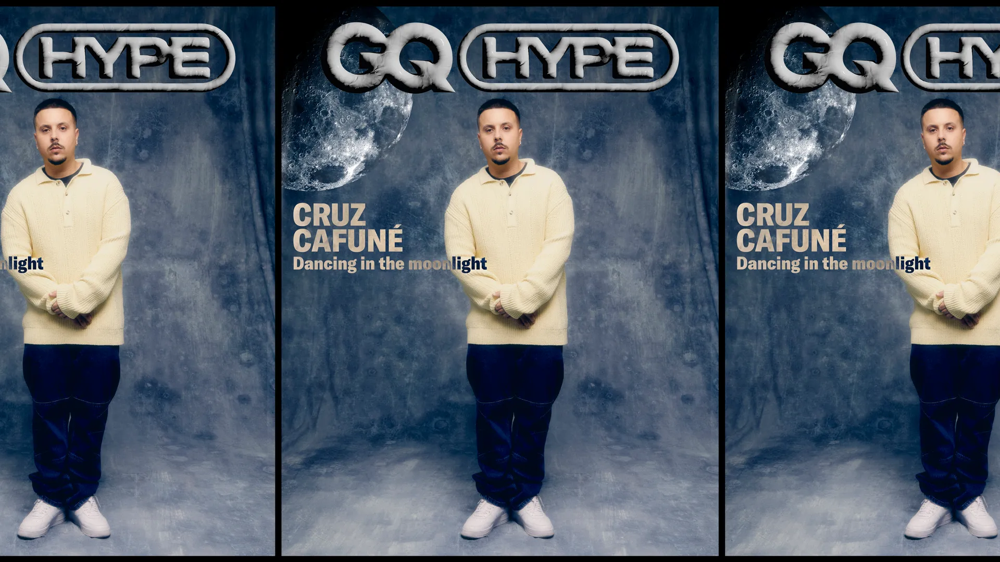

Cruz Cafuné: “Molaría crear una red más profesional en las islas…"
Bajo la actitud relajada, humilde y educada del artista canario,
se encuentra una de las personalidades más ambiciosas de la escena
underground nacional y un artista referente que lleva años demostrando el talento que se escondía en el archipiélago.

Cruz Cafuné: El máximo representante del trap canario
El cantante tinerfeño de ascendencia venezolana, Carlos Bruña Zamorín, conocido artísticamente como Cruz Cafuné,
se ha convertido en uno de los máximos representantes del trap canario a nivel nacional e internacional.
Su estilo único y su impactante entrada en la industria de la música han capturado la atención de miles de seguidores